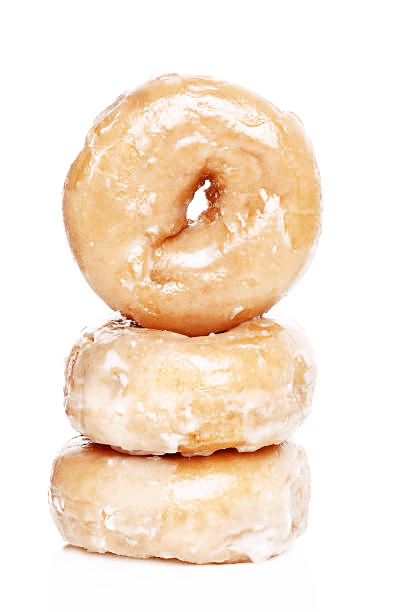

- Glazed Donut
Fried, sweetened pastries, known as donuts, are frequent additions to breakfast and snack menus. Donuts are generally topped with some sort of topping, such as frosting, powdered sugar, or a glaze made from combinations of milk, sugar, and vanilla or cocoa powder. Other flavors may be mixed into the glaze for a specialty donut. Most bakeries include a glazed donut on the menu, as it is a favorite among donut connoisseurs.It's simpler than you would think to make handmade glazed doughnuts.
These doughnuts, which can be produced in the convenience of your house in approximately two hours, have the same flavor as those from your favorite bakery.
Failsafe recipe for delicious doughnuts.You may make several types of flavored frosted doughnuts using the same doughnut batter!
Best Ingredients to Use for Homemade Doughnuts

- Milk
- Flour
- Yeast
- Eggs
- Butter
- Sugar
- Salt & Vanilla Extract
- Nutmeg
- Sprinkles (for decoration)
Ingredients
- 1 cup (240ml) whole milk, warmed to about 110°
- 1 Tablespoon active dry yeast
- 1/3 cup (65g) granulated sugar
- 2 large eggs
- 6 Tablespoons (86g) unsalted butter, melted and slightly cooled
- 1 teaspoon pure vanilla extract
- 1/4 teaspoon ground nutmeg
- 1/2 teaspoon salt
- 4 cups (500g) all-purpose flour (spoon & leveled), plus more as needed
- 1 or 2 quarts vegetable oil
Instructions
- Prepare the dough:
Whisk the warm milk, yeast, and sugar together in the bowl of your stand mixer fitted with a dough hook or paddle attachment.Cover and allow to sit for 5 minutes. The mixture should be a little frothy on top after 5 minutes. If not, start over with new yeast.
- Add the eggs, butter, vanilla, nutmeg, salt, and 2 cups (245g) flour. Beat on low speed for 1 minute. Scrape down the sides of the bowl with a rubber spatula as needed. Add remaining flour and beat on medium speed until the dough comes together and pulls away from the sides of the bowl, about 2 minutes. If needed, add more flour, 1 Tablespoon at a time, until the dough pulls away from the sides of the bowl. Dont add too much flour, though. You want a slightly sticky dough. *If you do not own a mixer, you can mix this dough with a large wooden spoon or rubber spatula. It will take a bit of arm muscle!
- Knead the dough:
Keep the dough in the mixer and beat for an additional 2 minutes or knead by hand on a lightly floured surface for 2 minutes.
- Let Dough Rise:
Lightly grease a large bowl with oil or nonstick spray. Place the dough in the bowl, turning it to coat all sides in the oil. Cover the bowl with aluminum foil, plastic wrap, or a clean kitchen towel. Allow the dough to rise in a relatively warm environment for 1.5-2 hours or until double in size.
- Shape Doughnuts:>
When the dough is ready, punch it down to release the air.Remove dough from the bowl and turn it out onto a lightly floured surface. If needed, punch down again to release any more air bubbles. Using a rolling pin, roll the dough out until it is 1/2 inch thick. Using a 3-3.5 inch doughnut cutter, cut into 12 doughnuts. If you cant quite fit 12, re-roll the scraps and cut more.
- Line 1 or 2 baking sheets with parchment paper or silicone baking mats. Place doughnuts and doughnut holes on each. (Feel free to discard doughnut holes if desired.) Loosely cover and allow to rest as you heat the oil. They will rise a bit as they rest. Place a cooling rack over another baking sheet.
- Pour oil into a large heavy-duty pot set over medium heat. Heat oil to 375°F (191°C). Add 2-3 doughnuts at a time and cook for 1
- Make the glaze:
Whisk all of the glaze ingredients together. Dip each warm doughnut (dont wait for them to cool!) into the glaze, making sure to coat both sides. Place back onto prepared rack as excess glaze drips down. After about 20 minutes, the glaze will set + harden.
Doughnuts are best enjoyed the same day. You can store in an airtight container at room temperature or in the refrigerator for 1-2 extra days.
Here's a video for all our visual learners out there: MyDonuts.com
.png)